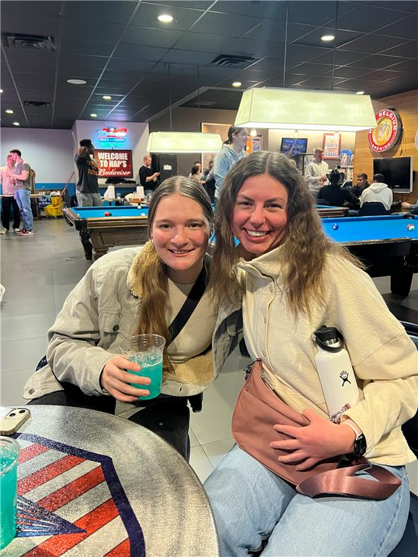
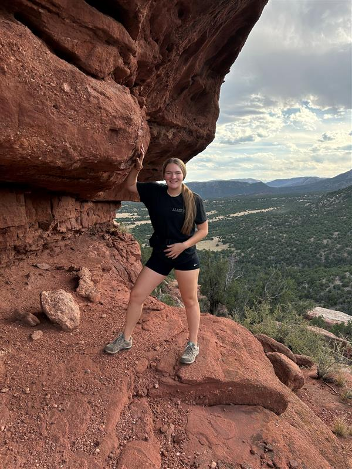
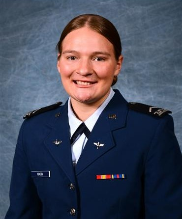
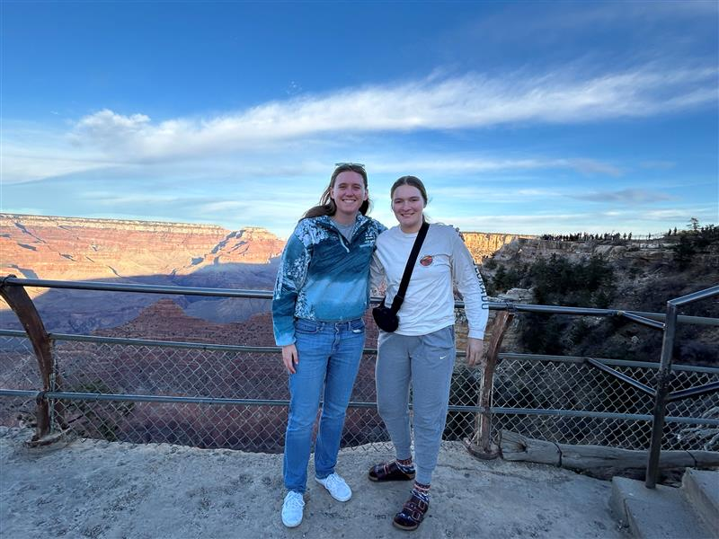
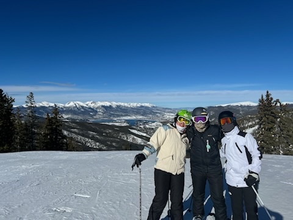

My name is Casey Nixon, and this webpage is all about getting to know me. I was born and raised about an hour outside of Pittsburgh, PA, in a small town called Darlington. Growing up, I worked various jobs from babysitting to working at a deli shop. During my senior year of high school, I also became a PIAA-certified basketball referee. When I was not working, you would likely find me playing basketball, participating in track and field, or spending time with my friends.
I grew up in a family of six with three older brothers. I am forever grateful for my brothers, as they taught me everything I know. They showed me how to be tough, how to lose, and how to win. They have made mistakes and achieved their dreams, and watching them navigate these experiences greatly influenced the decisions I made as I grew older. My oldest brother, Jimmy, recently earned his CFI and is aspiring to become an airline pilot. My second-oldest brother, Johnny, is currently at UPT and will receive his wings in a couple of weeks. Watching him work tirelessly for four years to achieve his dreams has been truly inspiring. My third-oldest brother, Justin, just graduated from the Merchant Marine Academy and is now an officer in the Naval Reserves. He is currently in New York, working as an engineer on a shipping boat. My father was a career Air Force pilot and also graduated from the USMMA. My brothers and I inherited our love of the outdoors and our sense of adventure from him. It is really special to see how we are all pursuing careers that reflect his influence. My mother, who stopped working when she had children, is the foundation of our family and holds everything together.
At USAFA, I am a computer science major and a member of the IC Track and Field team. I love being in Colorado and enjoy spending my free time mountain biking, skiing, backpacking, and camping. The thing I am most grateful for here is the people who surround me and have become family. It is what made me commit to the Air Force for five years and what motivates me to do my best every day. I am hoping to drop Intel or Cyber as my AFSC, and after my time in the Air Force, I want to get my nursing degree and work in humanitarian aid.
| M-Days | T-Days | Weekends | |
|---|---|---|---|
| 7am-8am: | awake | sleep | Sleep |
| 8am-9am: | class | sleep | Sleep |
| 9am-10am: | class | awake | Sleep |
| 10am-11am: | class | class | Sleep |
| 11am-12pm: | class | class | awake |
| 12pm-1pm: | lunch | lunch | lunch |
| 3pm - 8pm: | Track | Track | out |
| 8pm - 10pm: | HW | HW | out |
| 10pm | sleep | sleep | sleep |
 